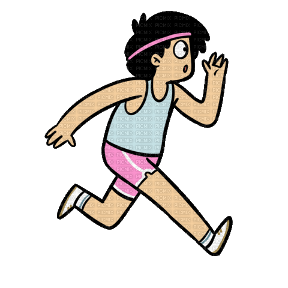

Latihan Image
1. Menambahkan gambar pada halaman
2. Format gambar yang didukung
- APNG- Animated Portabel Network Graphics
- ICO- Microsoft Icon
- JPEG- Joint Photographic Experts Group
- PNG- Portable Network Graphics
- SVG- Scalable Vector Graphics
- WEBP- Web Picture
3. Mengambil Gambar Dari Hardisk
4. Menyisipkan Gambar Dalam Paragraf
 ini adalah paragraf yang memiliki gambar
5.Image Map

6. Membuat link pada gambar
7. Gambar sebagai link
8. Auto Thumbnail
9. Dengan Style
10. Dengan berbagai bentuk
1. Lingkaran
2. Sudut Melengkung
3. Belah Ketupat